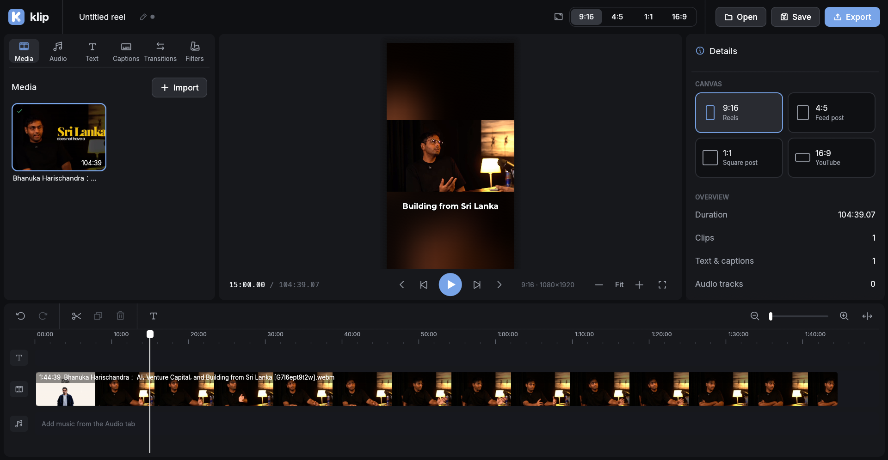

The CapCut alternative
Linux never had.
Klip is a free, native editor for Reels, Shorts and TikToks. Cut clips, add text, captions and music, and export a ready-to-post MP4.

Everything a short video needs
The tools you reach for every day, without the clutter.
Timeline editing
Trim, split, reorder and snap clips. Undo works for everything.
Any format
9:16, 4:5, 1:1 or 16:9. Move, scale and rotate clips freely.
Text and captions
Styled titles, or import an .srt and style all captions at once.
Music
Add tracks with waveforms, trim them and set the volume.
Transitions and filters
Fades, slides, wipes and zooms. Color looks and adjust sliders.
Export
H.264 MP4 at 1080p or 720p, exactly as you saw it in the preview.
Download
Get the latest release for your distro. Klip uses FFmpeg, which the .deb and .rpm install for you.
AppImage
.AppImageAny distro. No install needed: make it executable and run it.
chmod +x klip-x86_64.AppImage ./klip-x86_64.AppImage
Debian / Ubuntu
.debUbuntu, Debian, Linux Mint, Pop!_OS and other Debian-based distros.
sudo apt install ./klip_amd64.deb
Fedora / openSUSE
.rpmFedora, openSUSE and other RPM-based distros.
sudo dnf install ./klip.x86_64.rpm
Build from source
Prefer to build it yourself, or on a distro without a package? You need FFmpeg and Rust.
Install FFmpeg
sudo dnf install ffmpeg
sudo apt install ffmpeg
On Fedora, enable RPM Fusion first for H.264 export.
Install Rust
If you don't have it yet, get it from rustup.rs.
Build and run
git clone https://github.com/chamals3n4/klip.git cd klip cargo run --release
Use --release. The debug build is too slow for smooth 1080p preview.
Keep your hands on the keyboard
The ones you'll use most.
What's next
Klip is young. Here's what's done and what's coming.
-
Editing basicsv0.1
Timeline, text, captions, music and MP4 export.
-
Transitions and looksv0.1
Transitions, fades, filters and free move / scale / rotate.
-
Project managerNext
Browse, open and organise your projects from a home screen.
-
Audio fades
Fade music and clip sound in and out.
-
Auto captions
Generate captions from speech, on your own machine with Whisper.
-
Speed control
Slow motion and speed-ups for any clip.
-
Templates
Ready-made layouts for common Reel formats.